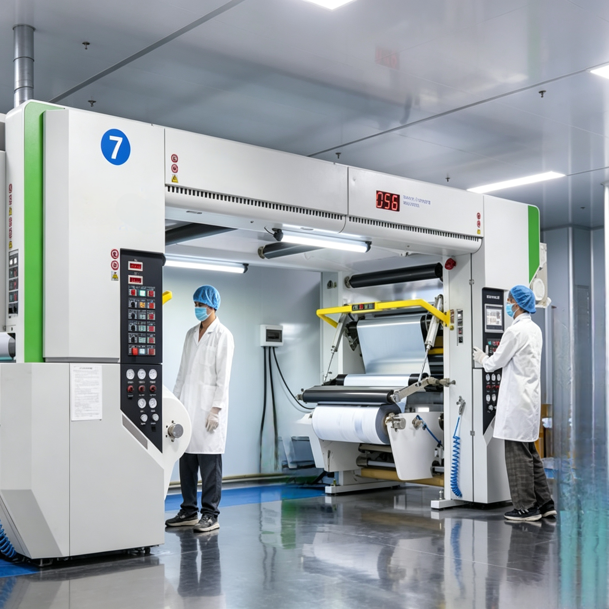

Solvent-Free vs. Dry Lamination: The 2026 Guide to Quality Packaging

In 2026, packaging is no longer just a container; it is a direct reflection of your brand’s quality and commitment to the planet. For our global partners and procurement managers, one question often arises during the sourcing process: "Should I choose Solvent-Free Lamination or Dry Lamination for my flexible packaging?"
As a leading flexible packaging manufacturer, Shenying Packing is here to break down the technical differences and help you make an informed decision for your brand.
1. Understanding the Core Differences
Dry Lamination: This traditional method uses solvent-based adhesives. The process requires a high-temperature drying tunnel to evaporate the solvents. While it is a mature technology, it faces increasing pressure from strict environmental regulations in many regions.
Solvent-Free Lamination: This is the industry’s "Gold Standard" for modern packaging. It uses adhesives that contain no solvents, allowing for a cleaner, faster, and more eco-friendly bonding process.
2. Key Comparison for International Buyers
When selecting your packaging solution, consider the following performance and safety metrics:
- Food Safety: Solvent-free eliminates the risk of solvent residues, making it safer for food and cosmetic applications.
- Environmental Impact: Solvent-free technology significantly lowers VOC (Volatile Organic Compounds) emissions, aligning with global ESG standards.
- Product Quality: Solvent-free structures are often thinner, clearer, and offer a softer, more premium touch.
3. The Shenying Packing Advantage
At Shenying Packing, we don’t just supply flexible packaging; we engineer solutions. By integrating our advanced solvent-free lamination with our custom paper tubes and eco-friendly bags, we help your brand achieve a fully sustainable packaging ecosystem.
Whether you are packaging dried fruits, frozen foods, or premium cosmetics, we provide custom solutions that ensure your product stays fresh, safe, and visually stunning.
Summary
Choosing the right lamination process is about balancing performance, cost, and brand reputation. 2026 is the year to align your packaging with the future. If you are looking to upgrade your packaging to be more sustainable and high-performing, let’s discuss your project today.
Ready to upgrade your packaging?
Contact us for a free quote and professional consultation:
📧 Email: may.lee@shenyingpacking.com
💬 WhatsApp: +86 13424643780